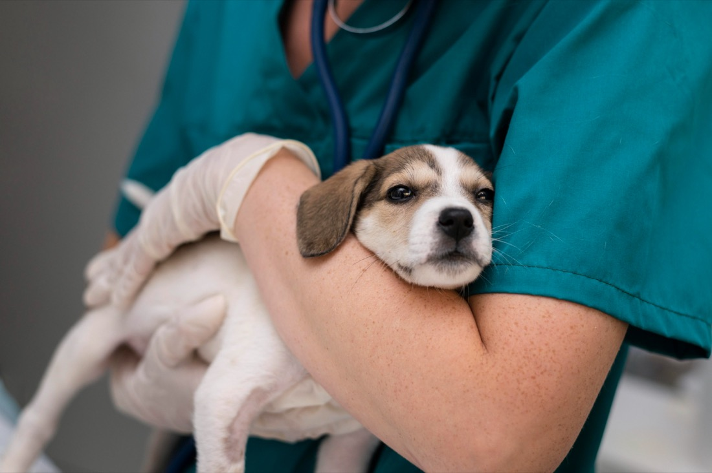
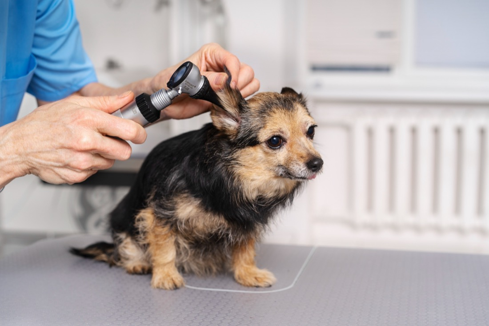

Emergency Vet Care When Your Pet Can't Wait
24/7 emergency care for dogs, cats, and exotic pets across Southern York County, PA and Northern Baltimore County, MD. If something is wrong, call us or come in now.
- Hours
- Open 24 hours a day, 365 days a year
- Location
- 96 Sofia Drive, Suite 203 · Shrewsbury, PA 17361
- Emergency line
- (717) 432-6030
Does My Pet Need Emergency Care?
Some symptoms and conditions should not wait for a regular veterinary appointment. Come in now or call us if your pet is experiencing any of these.
Call us. We'd rather help you decide than have you wait too long.
(717) 432-6030- 01Trouble breathing or respiratory distress
- 02Collapse, extreme weakness, or seizures
- 03Severe vomiting or diarrhea
- 04Trouble urinating or possible urinary blockage
- 05Bite wounds, major cuts, or traumatic injuries
- 06Pale gums or uncontrolled bleeding
- 07Possible poisoning or toxin exposure
- 08A swollen or painful abdomen
- 09A swallowed toy, sock, bone, string, medication, or other foreign object
- 10Heat stroke or overheating
- 11Sudden severe pain
- 12Labor complications
- 13Eye injuries
What happens when you arrive
Five steps, always in this order. Keep scrolling — each step settles on top of the last.
-
Immediate Triage
Every patient is assessed when they arrive.
-
Critical Patients First
Life-threatening emergencies receive immediate attention.
-
Diagnostic Testing
Digital X-ray, ultrasound & in-house lab testing.
-
Treatment Recommendations
We explain findings, options and costs before proceeding.
-
Ongoing Communication
Updates throughout the visit, shared with your vet.

available around the clock
What we provide around the clock
- 01
Emergency Exams and Triage
Urgent assessment and stabilization for injured pets.
- 02
Intensive Care
Advanced monitoring for critically ill patients.
- 03
Emergency Surgery
Procedures for life-threatening and urgent conditions.
- 04
In-House Laboratory
Rapid bloodwork and diagnostic testing.
- 05
Digital X-Ray and Ultrasound
Advanced imaging available around the clock.
- 06
Oxygen Support
Respiratory support for breathing difficulties.
- 07
Blood Transfusions
Type-matched transfusion services when needed.
- 08
Endoscopy
Minimally invasive retrieval and diagnostics.
- 09
Outpatient Emergency Care
Treatment and discharge when hospitalization isn't required.
- 10
Specialist Referrals
Coordination with local specialists when needed.
- 11
Euthanasia and Aftercare
Compassionate support during difficult decisions.
When your pet is sick or injured, you need answers and action.
Families throughout Pennsylvania and Maryland choose Mason Dixon Animal Emergency Hospital because we provide:
- 24/7 emergency veterinary care
- Emergency-focused veterinary team
- ICU and critical care monitoring
- Emergency surgery capabilities
- Digital X-ray and ultrasound on-site
- In-house laboratory testing
- Oxygen therapy and respiratory support
- Blood transfusion capabilities
- Coordination with family veterinarians
- Convenient access from York County and Northern Baltimore County

Digital X-ray, ultrasound and in-house lab testing — so answers come in minutes, not days.
Meet Our Emergency Veterinary Team
Our emergency veterinarians and support staff bring decades of combined experience in emergency medicine, surgery, intensive care, and critical patient management. Working together, our team provides around-the-clock emergency care while coordinating closely with your primary veterinarian whenever follow-up care is needed.
Need an Emergency Vet Now?
(717) 432-6030If your pet is experiencing a medical emergency, call Mason Dixon Animal Emergency Hospital or come in immediately.
For Referring Veterinarians
We work closely with veterinary practices throughout Pennsylvania and Maryland to provide emergency and after-hours care when patients need immediate attention. We provide emergency evaluations, diagnostics, hospitalization, intensive care, emergency surgery, and specialist referrals when advanced care is required.
FAQ
Quick answers before you head out the door. Still unsure? Call us any time — day or night.
Yes. We're open 24 hours a day, 7 days a week, including holidays, so you can reach us any time your pet needs urgent care.
No appointment is needed for emergency visits — walk in, or call ahead so our team can prepare for your arrival and guide you on what to do on the way.
We treat dogs, cats, and many exotic pets. If you're not sure whether we can help with your pet's species, call us and our team can advise you.
We use medical triage, not arrival order. Patients with life-threatening conditions are treated first, and stable patients may wait longer so we can prioritize the pets who need immediate care.
Yes. We routinely share exam notes, diagnostics, and treatment summaries with your primary veterinarian so they can continue your pet's care after your visit.
Bring your pet securely leashed or in a carrier, any medications they're currently taking, and your regular veterinarian's contact information if you have it. Call ahead if you can, so we know you're on your way.